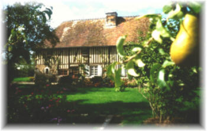
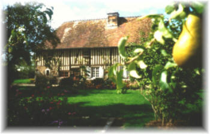

|
|
 |
|
L a G o d i n i è r e
(
Voir à ce sujet : Histoire de Noms et de Pigeonniers
)
|
|
|
|
|
|||
La Ferme de La Godinière
27410
Le Noyer en Ouche
Tel : 02.32.444.671
dernière mise à jour de cette page : 06.08.2010
Notre ancienne adresse web :cidre.rene.lesur.club.fr est
devenue obsolète et est
transférée sur
http://pagesperso-orange.fr/lagodiniere27/
Nous vous proposons la petite histoire de La
Godinière :
architecture du Logis principal et du Pigeonnier
La rédaction de cette page est en évolution constante en fonction des découvertes...
|
|
 |
|
L a G o d i n i è r e
(
Voir à ce sujet : Histoire de Noms et de Pigeonniers
)
|
|
Qu'elle est l'origine de ce hameau de la
commune de
Le Noyer en Ouche
portant le nom de La Godinière ?
Un Monsieur "Godin", "Gaudin", "de Godin", "de Gaudin"
serait à l'origine de ce
nom,
Les recherches que j'ai effectuées dans le célèbre
"Charpillon-Caresme"
ainsi que dans les archives départementales ne m'ont encore rien apporté... mais
dans la Notice Historique sur Beaumont le Roger |
D'après les informations transmises de bouche à oreille à travers les
générations qui se sont succédées, La Godinière est entrée dans la famille après
- ou, vers - la révolution française. A ce jour, nous n'en avons pas encore eu confirmation,
mais nous nous en approchons. En effet : le 19 avril 1868, est enregistré le
contrat de mariage de Robert Charles SAINTURETTE et de Charlotte Clémentine DOUCHE...
document de départ de nos recherches.
Robert Charles SAINTURETTE fut propriétaire de La
Godinière.
Retour sur Histoire de la Ferme de La Godinière
|
La Famille Sainturette à La Godinière... |
au début du siècle, vers 1920 |
===============================================================================================
1950 : La Godinière est exploitée par Pierre Hachette en vertu du bail du 24 janvier 1950, consenti par Aline Guérin, Veuve de Charles Sainturette, pour une contenance de 34ha 53a 94ca.
1981 - 13 août : acte de donation de Mme Veuve Hélène Hachette à Pierre Hachette
en l'étude de Me Duvivier, notaire à Beaumesnil.
De par cet acte La Godinière devient propriété de Pierre Hachette.
1981 : La Godinière est exploitée par René Lesur
1989 - 29 juin : Donation partielle de Pierre
Hachette à Annie Hachette (épouse de René Lesur), de La Godinière. Nathalie,
sa deuxième fille aura également un autre immeuble.
De par cet acte La Godinière est attribuée à Annie Hachette épouse
Lesur René
===============================================================================================
Lorsque nous sommes entrés à La Godinière, il
n'y avait pratiquement rien... c'était au siècle dernier...
Lorsque l'on arrive, on peut observer que le logis est constitué à la
base de trois pièces en rez-de-chaussée, et à l'étage, également trois pièces à
usage de chambres à coucher surmontées d'un grenier. On remarque également la
cheminée qui, vue de l'extérieur, semble monumentale.
L'accès se faisait par une solide porte de bois qui ouvrait sur un couloir. Juste en entrant à gauche, une porte très basse accédait à la cave, sur la droite au milieu, une porte donne sur la cuisine et au bout du couloir, une autre porte très lourde mène à l'escalier.
La demeure était habitée par un ouvrier agricole depuis 1957, seules trois
pièces étaient occupées :
- la cuisine, la seule pièce principale, située au centre avec une
cheminée et le fourneau à bois, placé sur son côté gauche. Sur le côté droit de
la cheminée, il y avait un Potager construit en briques et dans un
état très délabré... (je vous laisse deviner ce que c'était et à quoi il était
destiné).
- une chambre en rez-de-chaussée à l'extrémité nord, avec également une
cheminée pour le couple ouvrier de ferme.
- et une petite chambre de bonne pour leur fils, située à l'arrière vers
l'ouest, dans un agrandissement de la construction.
- Il y avait l'électricité, c'était le seul élément de modernité... et de
confort... oh ! juste pour l'éclairage !!!
- Il y avait aussi la cave, qui est certainement l'endroit qui ne doit
manquer sous aucun prétexte dans une ferme, elle se situait en entrant dans la
maison sur la gauche : la pièce en rez-de-chaussée à l'extrémité sud.
- Pour ce qui est de l'eau, la distribution par le réseau était arrivée à
La Godinière, mais s'arrêtait à l'entrée de la propriété, près de la barrière
distante d'environ 80 mètres...
Les autres pièces de l'étage au nombre de trois
étaient inoccupées et avaient servi à une époque pas si lointaine, de grenier à grain, au même
titre que le grenier proprement dit, situé sous la toiture. Mais cela fait bon
nombre d'années que les récoltes ne sont plus stockées à l'intérieur du logis.
- Seule la pièce du centre a servi de chambre pour les "bonnes" et
quelques traces de leur passage subsistent, quelques noms ont été inscrits au
crayon mine sur la porte... Cette pièce à le privilège de posséder une cheminée
à feu ouvert.
Pierre Hachette m'a raconté qu'il y a eu également un prisonnier allemand qui travaillait dans la ferme, il s'appelait parait-il : Barner...Bahrner ? et jouait de la clarinette... l'air dont il se souvient le plus était : La Paloma. Le fermier de l'époque était Monsieur Philippe.
La bâtisse a été préservée des intempéries grâce à
l'entretien des toitures qui ont maintenu le logis hors d'eau par la Grand-Mère
Hélène qui en était propriétaire, ce qui est primordial.
Mais il n'en a pas toujours été ainsi, et le temps a marqué son emprunte, la
partie arrière à l'ouest était bien endommagée et il a été nécessaire de la rénover
entièrement, les sablières étaient par endroit inexistantes et les colombages
détériorés du fait des ravages dus aux infiltrations d'eau.
Sans compter avec les dommages de guerre lors de l'explosion d'un camion de munitions..
===============================================================================================
Lors des différents travaux de rénovation, nous sommes allés de surprise en surprise... mais nous n'avons pas trouvé le trésor, ni l'entrée du souterrain, vous savez, comme dans les légendes...
Bien sûr, la première opération a été le nettoyage : détritus divers, beaucoup de poussières, et examiner l'édifice pour savoir par quel côté on allait commencer.
Tous les sols étaient dans un mauvais état.
- Au rez-de-chaussée : la cave en terre battue, et dans les deux autres
pièces des briques inégales sur terre battue.
L'humidité était très présente, et à la saison des fortes pluies en hiver, à l'époque où il pleuvait - je dirai d'une manière normale - l'eau remontait sur le sol, au point de mettre des briques sous les pieds du lit...
A ce jour, ce n'est plus le cas...
- A l'étage : vestiges de tomettes sur terre battue, rendue informe par les galeries de rongeurs qui avaient élu domicile à l'époque du stockage des récoltes.
- Au grenier, c'était évidemment la même chose, et des planches obstruaient les trous dans le sol qui avaient été provoqués par les infiltrations d'eau à une époque déjà lointaine.
Il a fallu tout refaire du sol au plafond sur tous les niveaux...
et au cours de ces interventions, des incohérences dans la construction...
Bien sûr, la partie arrière, à l'ouest est le
résultat d'un agrandissement, c'est évident, la construction moins soignée et
rapportée sur le corps principal d'origine en témoigne.
Cette construction a pour intérêt, certes le logement, seulement une petite
chambre, mais aussi une pièce utile à la vie de la maison : une buanderie... qui
a également servi de laiterie. Elle abrite également l'escalier qui permet
d'accéder aux chambres de l'étage, desservies par un long couloir directement
sous la pente du toit, puis un second escalier mène au grenier.
Sur le pignon nord, un autre agrandissement dont on ne connaît pas la destination d'origine, mais qui a servi vraisemblablement a abriter le cochon... puis le bois pour le chauffage. Cet emplacement sera démoli et reconstruit pour servir aux besoins de l'exploitation.
Dès lors que les opérations de nettoyage furent terminées, il a fallu s'attaquer à l'ouvrage. Les planchers de terre battue des étages ont été descendus et remplacés par des planchers bois, ce qui permet au passage de soulager la structure. Bien sûr, l'avantage du plancher en terre battue est d'être isolant, mais, les murs sont en colombages remplis de terre sans autre revêtement, la construction est restée à l'état brut, seulement une petite couche de chaux comme finition. Autant dire que cela ne représente pas grand chose à ce niveau.
A l'approche du vingt et unième siècle, nous allons modifier les conditions de ce logement en apportant un peu de confort...
à suivre
===============================================================================================
d
Carte de l'Eure - situation de La Godinière : cliquez
Dessins de Susan Benett : cliquez
TARIF des Produits disponible sur demande :
cliquez
Consultez le Calendrier des
manifestations
Adhérent du
Réseau Bienvenue à la Ferme
Retour
Les Produits
ou
Accueil ou
Plan du
site
Ecrivez nous pour donner votre impression et votre suggestion,
merci.
Email :
accueil@eure.chambagri.fr
Site Web :
http://www.normandiealaferme.com
ou page précédente
Conception et Réalisation : René Lesur